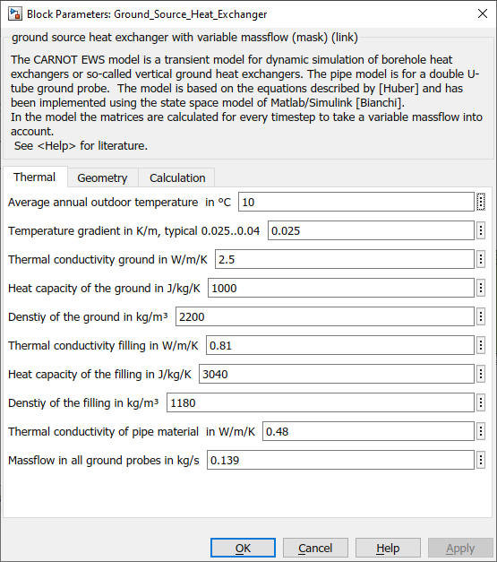
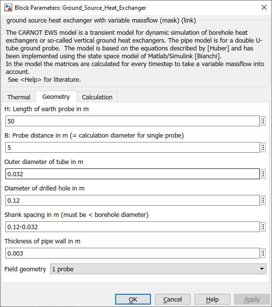
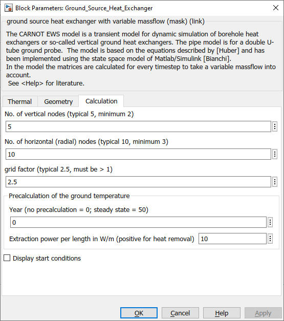

Ground_Source_Heat_Exchanger
Path:
CARNOT/Source/Heat_Exchanger
Purpose:
Model of a vertical ground source heat exchanger for heat pumps.
Description:
The CARNOT EWS model is a transient model for dynamic simulation of borehole
heat exchangers or so-called vertical ground heat exchangers. The model is
based on the equations described by [Huber97], [Huber 1999] and has been
implemented using the state space model of Matlab/Simulink [Bianchi06].
The field geometry can be :
Typical values for the ground properties are :
| material | conductivity in W/(m*K) | capacity in J/(kg*K) | density in kg/m³ |
| sand (dry) | 0.3 | 800 | 1650 |
| sand (humid) | 0.6 | 1000 | 1750 |
| clay (humid) | 1.3 | 880 | 1450 |
| soil saturated with water | up to 3.0 | 2000 | 1500 |
| bentonite filling | 1.0 | 2000 | 1000 |
| soil with gravel | 0.59 | 1840 | 2040 |
Input:
| THBin | : | Thermo-Hydraulic Bus of the entering flow |
Output:
| THBout | : | Thermo-Hydraulic Bus of the leaving flow |
| Tnodes | : | radial node temperatures in the ground in °C |
Parameters and Dialog Box:



Examples:
Open the example explorer from the Matlab command window
ExampleBrowser
or load the examples via the CARNOT library.
Literature:
Bianchi M. A., Adaptive modellbasierte prädiktive Regelung einer
Kleinwärmepumenanlage, Dissertation ETH Zuerich, No. 16892, 2006
Huber A, Schuler O., Berechnungsmodul für Erdwärmesonden (EWS).
ENET Bericht Nr. 9658807-1, 1997 (accessed 09/01/2025)
Huber: Huber A., Erweiterung des Programms EWS für Erdwärmesondenfelder,
Forschungsprogramm Umgebungs- und Abwärme, Wärme-Kraft-Kopplung (UAW) im
Auftrag des Bundesamtes für Energie, Swiss, 1999 (accessed 09/01/2025)
Validation:
Ochs_Carnot_EWS_2012
Schmitz_Validierung_EWS_Modell_2022
Characteristics:
| Direct Feedthrough | : | Yes |
| Sample Time | : | Inherited from driving block |
| Vectorized | : | No |